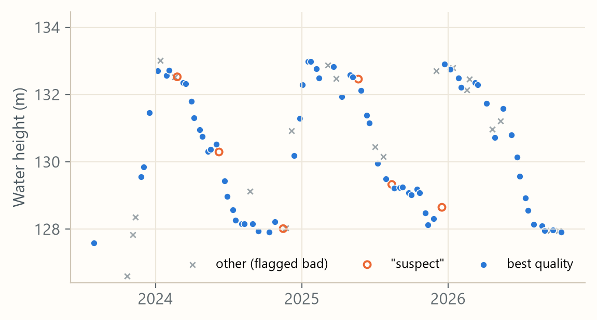

SWOT lake productNASA and CNES · version D · July 2023 onwards
Checked: works for us
- What it gives
- A water height (and area) for every lake on each pass. SWOT sees all 13 study tanks about twice every 21 days.
- Size
- One pass file for every lake: about 12 MB. Through Hydrocron a lake's whole record is tiny: all 677 lakes we checked came to 9 MB.
- Is it right for us?
- All 13 study tanks have a SWOT lake ID, with 47–90 usable readings each since July 2023.
- At the 5 big reservoirs SWOT reads 40–64 cm above the gauges: a steady gap, with only 7–13 cm of scatter.
- Village tanks get almost only "suspect" readings, so Member B's trust screen cleans them first.
- Official accuracy: 10 cm is required on lakes over 1 km²; 25 cm is the goal for smaller lakes.
- How others used it